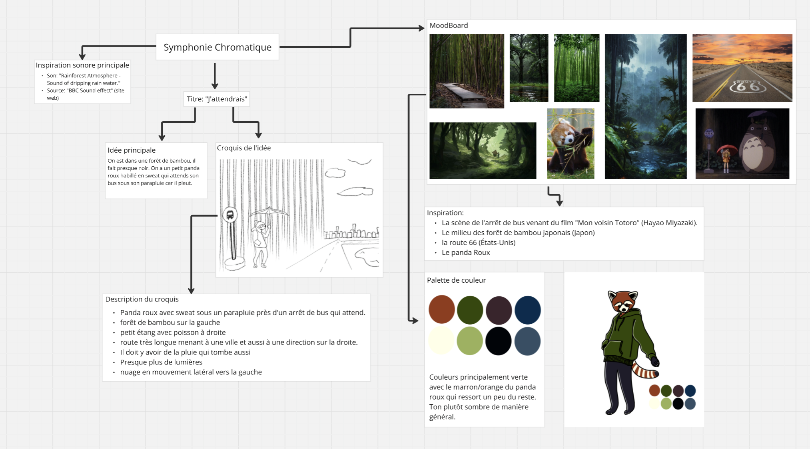

Animation 2D | Juin 2025
J'attendrais
C'est une animation 2D réalisée lors de ma 2e année de bachelier en arts plastiques, visuels et de l'espace dans les Arts numériques à l’ESA Saint-Luc Bruxelles. C'est un petit métrage dans lequel on y voit un panda roux qui attend le bus qui ne viendra jamais. l'idée ici était de créer une animation qui ressemble à des fonds d'écran animés avec plusieurs petites animations dans la même scène qui donne vie à la séquence. Le projet a globalement été réalisé avec le logiciel Procreate Dream et Procreate sur iPad. Le thème global était "Symphonie Chromatique". Ce qui faisait que le son était primordial dans ce projet. Ici, on se concentre essentiellement sur le bruit de la pluie.
MindMap
